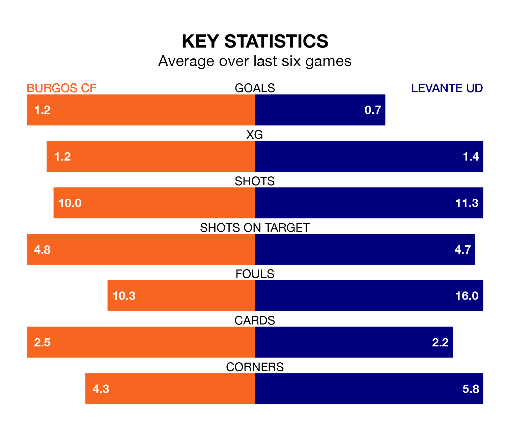

Burgos CF host Levante UD at Estadio Municipal de El Plantío on Saturday lunchtime on the back of three consecutive wins in the Segunda División.
Burgos have picked up 12 points from their last six games, and they face a Levante side who drew their last match, and have collected six points from the last possible 18.
With 39 goals in 30 games so far this season, Burgos are scoring more than average in the league with 1.3 goals per game. But they are conceding more than average too, letting in 37 goals at a rate of 1.2 per game.
Levante are also above average scorers, with 1.2 goals per game, compared to a league average of 1.1. They have conceded 1.1 goals per game.
With José Antonio Caro Díaz between the sticks, the home team can rely on one of the league's safest pair of hands. He has kept 13 clean sheets in his 30 appearances this season, and only one other 'keeper – SD Huesca's Álvaro Fernández – has been able to prevent the opposition scoring on more occasions in the Segunda División.
In the visitors' net, Andrés Fernández has 12 clean sheets in 22 games.
Burgos are sixth in the table after 30 games, of which they have won 14 and drawn six, earning 48 points.
Levante are five places behind Burgos in 11th, with 10 wins and 13 draws putting them on 43 points.
In the last three years, Burgos and Levante have played each other on three occasions. Levante won two of them and they drew once.
Their last meeting was on August 19, when Levante won 3-2 at home.
Burgos's last match was on Sunday, a 1-0 win against SD Eibar, with Peru Nolaskoain getting the goal for Burgos.
Levante drew 0-0 with FC Andorra last time out, on Wednesday.
Saturday's match will be refereed by Rafael Sánchez López, who has taken charge of 15 Segunda División games so far this season, issuing three red cards and booking 61 players. He has awarded eight penalties.
The last Burgos game Sánchez López refereed was a 2-0 away loss to Elche CF on February 2. His last Levante match was their 2-0 win at home against CD Eldense on September 23.
Updated: 15:10 (UTC), 15/03/24